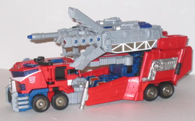
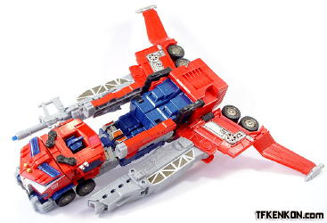
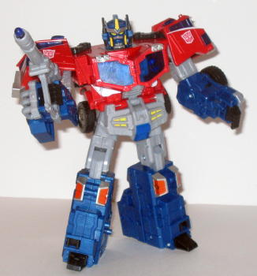
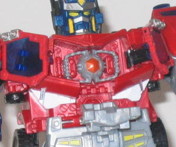
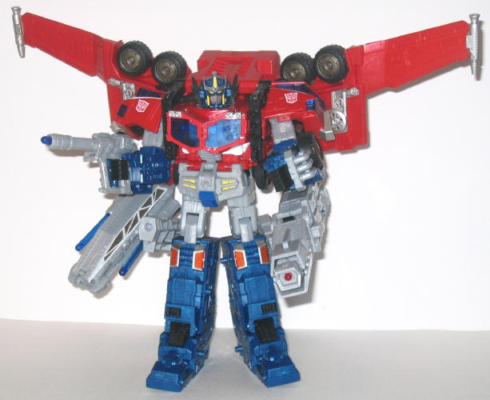

Allegiance
: Autobot
Size
: Leader (Super)
Homeworld
: Earth according the package,
Cybertron according to the storyline
Cyber Key Code
: 18p3
Difficulty of Transformation
: Hard
Color Scheme
: Red, light gray, dark
blue, and some silver, white, black, transparent dark blue, transparent
dark red, glossy light red, yellow, and metallic orange
Rating
: 9.7


Optimus Prime's vehicle
mode is-- you guessed it-- a truck. It's a highly futuristic, hauler-fire
truck hybrid, but still a truck. And it's got the good ol' dependable Prime
color scheme-- red, white, and gray with a few other colors thrown in here
and there for good measure. And it still looks as good as it always did
on an Autobot leader, so no complaints there. The mold detailing is also
exquisite, especially on the large guns on the top of the vehicle mode,
and although perhaps a few more paint apps on the backside of the vehicle
mode would have been preferable, he's still got enough of those to satisfy
overall. The vehicle mode overall looks VERY cool, and has nice proportions--
big guns, a rough-n-tough grill and molded plating details, but he still
looks sleek enough that you think he'd be able to go rather fast. His front
windows are transparent, but the plastic is too dark to really see if there's
anything inside them-- which is probably for the best, since the front
part splits in two during the transformation, so it probably doesn't look
all that realistic in there. He has blue sirens above the front area, which
gives him a bit of an "emergency vehicle" feel, and the big guns kinda
look like fire ladders-- hence the hauler/fire truck hybrid look the toy
gives off. Even though he splits into a few pieces during transformation,
all of them hold together quite well in vehicle mode, so no problems there.
There is one minor robot extra problem around the middle area of the truck,
however-- the top of Prime's head is rather obvious from a top view, as
it doesn't blend in with the surrounding plastic. The robot chest windows
fold to the sides to form nice "side" windows, which is a nice touch and
helps to cover up those big clips. As mentioned before, there are two big
guns on the top of this mode, and each of them has a feature that can be
unlocked with Prime's Cyber Key (which, by the way, is unpainted-- a shame,
since it's in the shape of the Matrix, so a bit of gold paint on the edges
of it, like the Japanese version has, would have made it look much cooler).
If you insert it in the larger left gun, the front part of the gun opens
up, a red light flashes on, and a little-too-short "plasma firing" sound
is heard. Press the sound button on the side of the gun, and a "metal parts
moving/opening" sound is made. (Perhaps those two sounds should've been
switched...) If you press the button when the key is not inserted, a longer
"fire-spitting" sound is heard, which sounds rather cool. If you insert
the Cyber Key in the other gun, two smaller missile launchers swing out
from the sides of it, which can be individually fired-- another pretty
cool feature. Prime's hand-held gun in robot mode is attached to the head
of that same gun in vehicle mode, so that gives Prime another spring-loaded
missile to shoot at Decepticons. And if THAT weren't enough, Prime also
has two rotatable (non-firing) guns below those two big guns! Talk about
being loaded for combat!
Optimus has a "flight
mode", which is little more than flipping down the sides of his vehicle
mode, so it seems more of a fan mode to me than anything else. It's rather
weak, but at least they are sizable wings, and I consider it more of a
bonus sub-mode than anything else.



Prime's normal robot
mode, as you'd expect from the rating, is also stupendous. It's very Prime-ish,
with a transparent "window" chest, all the colors in the appropriate places,
and a Prime-like face. Well, except Prime has a mouth instead! It definitely
takes a little getting used to, but Hasbro said they wanted Prime to be
a more expressive character, since the mouthplate hindered that a little,
so I can understand the switch. It doesn't look goofy like it did on
Energon
Prime
or anything. And-- here's the best part-- if you don't like the
mouth, just push down on the lever behind his head to lift up a faceplate
to cover his mouth! Even though it's rather simple, it's one of the toy's
coolest features-- it gives more of a "battle mask" feeling to the faceplate
this time around. I'm also fond of the truck grills on the backside of
his arm-- they look like cool arm guards. His chest also opens up to reveal
a removable Matrix! Alas, the handles of the Matrix are just a tad too
small for Prime to easily be able to hold it in his hands, but it's still
a cool detail nonetheless. Prime also has excellent articulation-- he can
move at pretty much any point except the waist. The four fingers on his
hands can also open and close as one, allowing him to hold his hand-held
rifle in a manner other than the traditional "peg-in-fist-hole". The only
problem I have with this mode-- and it's a pretty minor one-- is that the
waist piece sticks out a little from the stomach, and looks a little odd
that way, like he's thrusting his pelvis out a bit. The back half of his
vehicle mode sorta transforms into a battle station, but it honestly look
like little more than said back half of his vehicle mode positioned in
front of him..
Optimus' super robot
mode is truly a sight to behold. He's got the looks and (most of) the articulation
of his robot mode, plus the HUGE guns of his vehicle mode. Oh, and he's
got those super-neato wings on his back for flight capability. Basically,
his back half splits into three pieces-- two of the pieces attach to the
back of his legs for added support, while the biggest piece hooks over
his arms like a backpack. And all of the parts fit on very well, too, so
no worries about Prime falling apart or anything of the sort. His faceplate
also flips up for added battle protection, and little wing crests fold
out from the side of his head to... well, make him look cooler. He's a
LITTLE back heavy in this mode, but not so much so that it's nigh-impossible
to get him to stand correctly-- it just means you can't pose him in a way
that he's leaning backwards or anything like that.
Cybertron Prime isn't
just one of the greatest Primes ever, he's one of the greatest TRANSFORMERS
ever. He's nearly flawless in every mode, and his super robot mode looks
like it could cause some SERIOUS damage. Add all the neat features like
the flip-up-faceplate and the two Cyber Key gimmicks, and you've got a
highly playable, fantastic-looking toy. HIGHLY recommended.
Review by Beastbot
(NOTE: The instructions show Optimus Prime's super robot mode incorrectly. The correct way to transform him is shown above. Also, the picture of Prime's flight mode is from TFKenkon.com .)